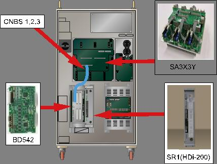
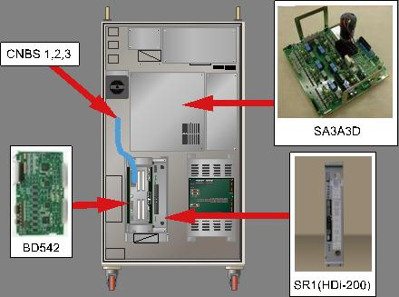
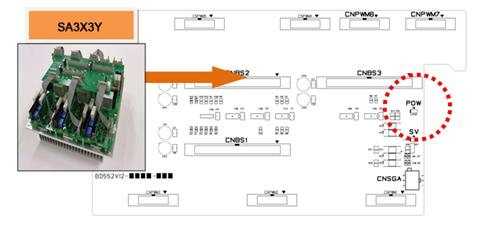
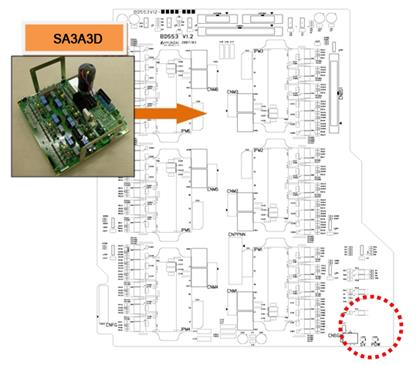
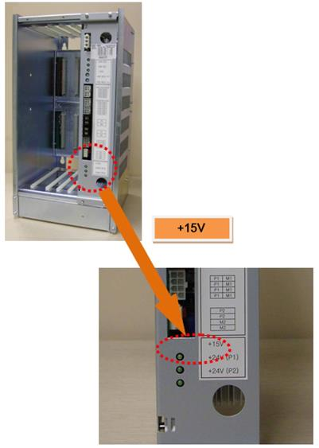
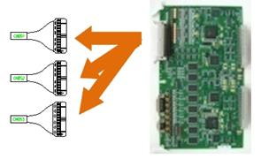

기존 에러코드: E0114 구동장치 제어전압 저하
1.1.66.1. 개요
서보 구동장치에 공급되는 제어전원인 +15V가 저하되었습니다. 해당 에러는 서보 구동장치에서 검지하여 CNBS 케이블을 통해 서보 보드로 전달됩니다.
1.1.66.2. 원인 및 점검방법
|
(1) 전원 표시 LED를 확인하여 주십시오. n 서보 구동장치의 ‘POW’ LED를 확인하여 주십시오. n 제어전원 공급장치인 SR1의 ‘+15V’ LED를 확인하여 주십시오.
<2개 모듈의 LED가 모두 OFF된 경우> (2) 제어전원 공급장치(SR1)의 출력을 확인하여 주십시오. n CNBS 케이블을 BD542에서 분리한 후 LED를 확인하여 주십시오. n 서보 보드를 Rack에서 분리한 후 LED를 확인하여 주십시오.
(3) 제어전원 공급장치(SR1)를 점검하여 주십시오. n SR1에 입력되는 전압을 확인하여 주십시오. n SR1을 교체한 후 LED를 확인하여 주십시오.
<서보 구동장치의 ‘POW’ LED만 OFF된 경우> (4) 관련 부품을 교체하여 전원 표시 LED를 확인하십시오. n CNBS 케이블을 교체한 후 LED를 확인하여 주십시오. n 서보 보드를 교체한 후 LED를 확인하여 주십시오. n 서보 구동장치를 교체한 LED를 확인하여 주십시오. |
(1) 전원 표시 LED를 확인하여 주십시오.
구동장치 제어전압 저하 에러는 제어용 +15V의 저하로 인해 서보 구동장치에서 검지하고, CNBS1,2,3 케이블을 통하여 서보 보드(BD542)에서 처리합니다.

(a) Hi5-N00 제어기

(b) Hi5-N30 제어기
그림 1.181 구동장치 제어전압 저하 관련 부품 배치
n 서보 구동장치의 ‘POW’ LED 점검
구동장치 제어전압 에러를 검지하는 모듈의 ‘POW’를 확인하여 주십시오. 정상적으로 전원이 공급되는 경우에는 해당 LED가 항상 ON(점등)되어 있어야 합니다.
Ø 중형 로봇용 서보 구동장치 : SA3X3Y
Ø 소형 로봇용 서보 구동장치 : SA3A3D

(a) Hi5-N00 제어기 (SA3X3Y)

(b) Hi5-N30 제어기 (SA3A3D)
그림 1.182 의 ‘POW’ LED 관련 부품 배치
n SR1의 ‘+15V’ LED 점검
서보 구동장치의 ‘POW’ LED가 OFF되어 있으면 SR1의 LED를 확인하여 주십시오. SR1과 서보 구동장치의 LED가 동시에 OFF되어 있는 지 확인하여 주십시오.

그림 1.183 SR1의 ‘+15V’ LED 관련 부품 배치
(2) SR1의 출력을 확인하여 주십시오.
SR1 자체 출력을 확인하기 위해 서보 구동장치에 연결되는 배선과 부품을 분리하여 ‘+15V’ LED를 점검합니다.
n CNBS 케이블을 분리한 후 LED를 점검
서보 구동 장치와 서보 보드를 연결하는 CNBS1, CNBS2, CNBS3을 분리한 후 SR1의 .LED를 확인하여 주십시오. 케이블을 분리한 후에 SR1의 ‘+15V’ LED가 ON되는 경우에는 서보 구동장치의 불량입니다. 서보 구동장치를 정상품과 교체하여 주십시오.

그림 1.184 CNBS 케이블의 분리
n 서보 보드(BD542)를 분리한 후 LED를 점검
Rack 에서 서보 보드를 분리한 후 SR1의 LED를 확인하여 주십시오. 서보 보드를 분리한 후 SR1의 ‘+15V’ LED가 ON되는 경우에는 서보 보드 불량입니다. 서보 보드를 정상품과 교체하여 주십시오.
그림 1.185 Rack에서 서보 보드의 분리
(3) 제어전원 공급장치(SR1)를 점검하여 주십시오.
제어전원 공급장치는 AC 220V를 입력 받아 내부회로에서 각 보드에 필요한 제어전원을 출력합니다.
n SR1의 입력 전압의 점검
SR1에 입력되는 전압이 사양을 벗어나는 경우 제어용 전원의 출력에 이상이 발생 할 수 있습니다. 입력전압이 허용 범위를 초과하는 경우에는 제어기 입력전압 점검 절차와 제어기 내부 단상 전압 점검 절차를 참고하시기 바랍니다.
Ø SR1 입력 전압 사양: 단상 AC 48V
Ø 허용 범위: 44V ~ 52V
n SR1의 교체 후 LED 확인
SR1을 정상품으로 교체 한 후 ‘+15V’ LED를 확인하여 주십시오. 정상품으로 교체 후 LED가 ON되면, 교체전의 SR1이 불량입니다. 정상품으로 교체하여 사용하시기 바랍니다.
(4) 관련 부품을 교체하여 전원 표시 LED를 확인하여 주십시오.
서보 구동장치, 서보 보드 및 CNBS 케이블을 교체한 후 서보 구동장치의 ‘POW’ LED를 확인하여 주십시오.
n CNBS 케이블을 교체한 후 ‘POW’ LED를 점검
서보 구동장치와 서보 보드를 연결하는 CNBS1, CNBS2, CNBS3을 교체한 후 서보 구동장치의 ‘POW’ LED를 확인하여 주십시오. 케이블을 교체한 후에 ‘POW’ LED가 ON되는 경우에는 케이블의 불량입니다. CNBS 케이블을 정상품으로 교체하여 주십시오.
n 서보 보드를 교체한 후 ‘POW’ LED를 점검
서보 보드를 교체한 후 서보 구동장치의 ‘POW’ LED를 확인하여 주십시오. 서보 보드를 교체한 후에 ‘POW’ LED가 ON되는 경우에는 서보 보드의 불량입니다. 서보 보드를 정상품으로 교체하여 주십시오.
n 서보 구동장치를 교체한 후 ‘POW’ LED를 점검
서보 구동장치를 교체한 후 서보 구동장치의 ‘POW’ LED를 확인하여 주십시오. 케이블을 교체한 후에 ‘POW’ LED가 ON되는 경우에는 서보 구동장치의 불량입니다. 서보 구동장치를 정상품으로 교체하여 주십시오.
Ø 중형 로봇용 서보 구동장치: SA3X3Y
Ø 소형 로봇용 서보 구동장치: SA3A3D